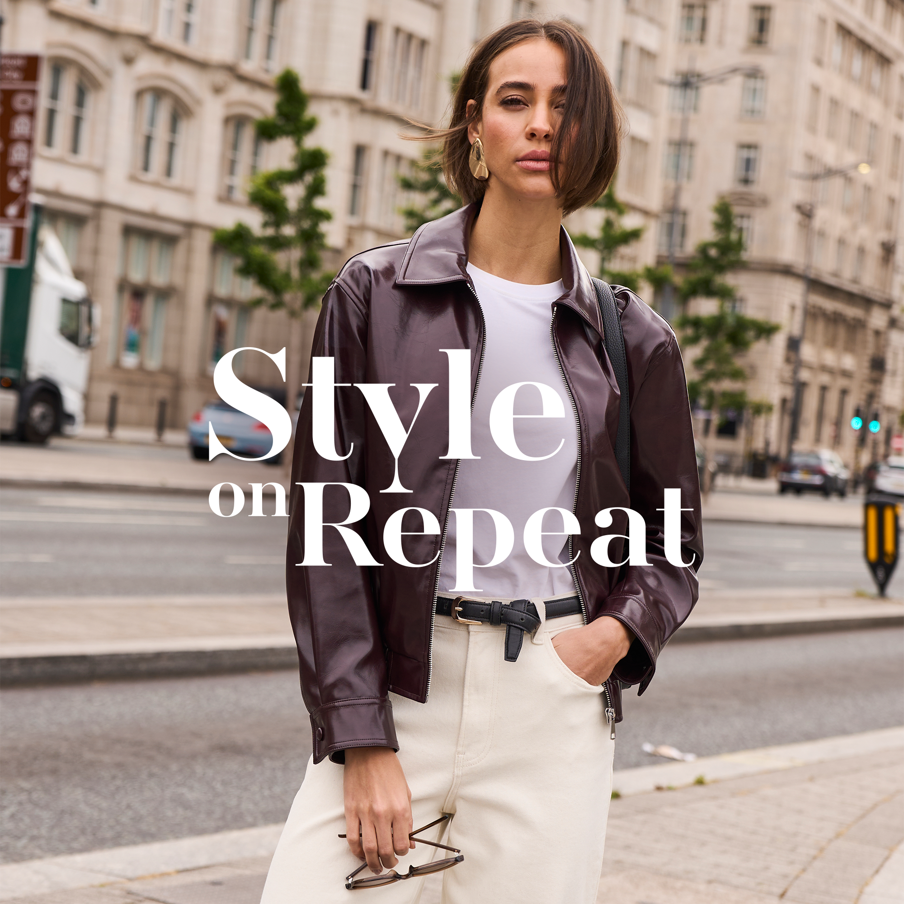
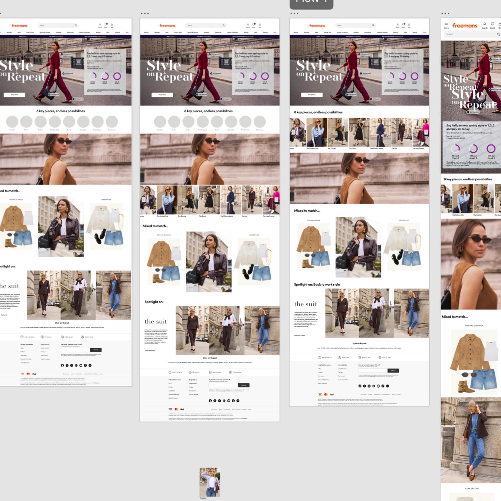
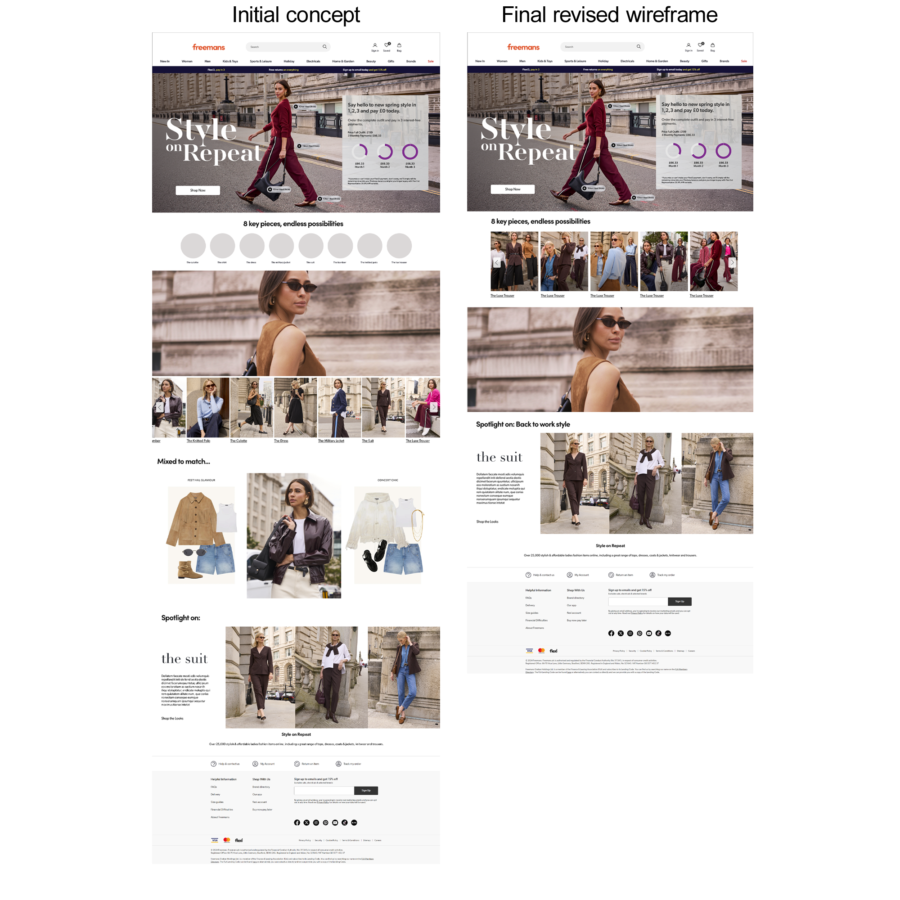

The initial landing page concept was designed by a colleague, establishing the campaign's visual direction and page structure, approved by stakeholders. Following some last-minute changes to the campaign requirements, including a decision to reduce the overall page length, I revisited the wireframes and adapted the layout to reflect the updated direction. Once the revised approach was approved, I took the design forward into development, maintaining the original visual direction while adapting elements where needed for the final responsive experience.


Inspired by European aesthetics, the campaign captured the spirit of summer travel through vibrant, lifestyle-led imagery. The visual direction centred around a relatable summer narrative — following a woman navigating a season of events, family and holidays, while embracing the freedom to make time for herself.